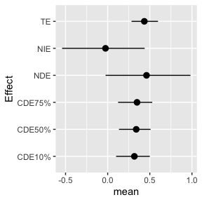

In this scenario, we have a continuous \(M\), a binary outcome \(Y\), and an effect modifier on \(Y\), x2. The sample size is 50 and there are 3 covariates.
Example with N=50, L=3 for scenario 4 (binary \(Y\), continuous \(M\), x2 is an effect modifier on \(Y\)):
dat <- cma_sampledata(N = 50, L=3, P=3, scenario=1, seed=7)
head(dat$data, n = 3L)
#> z1 z2 z3 M x1 x2 x3
#> 1 2.2767428 0.1432685 0.7973699 0.58827130 -0.3556944 2.02334405 -1.477592
#> 2 -1.0893537 -0.0944783 0.4035083 0.01382552 1.0973004 0.86249250 -2.973256
#> 3 -0.6389109 0.2491581 -0.1243989 -0.42344188 -0.9066920 -0.02490949 -1.339762
#> y
#> 1 1.964451
#> 2 -1.526532
#> 3 -1.305984
dat = dat$datalet \(A\) be a \(n\)-by-\(L\) matrix containing an exposure mixture comprised of \(L\) elements,E.M and E.Y be effect modifiers of exposure-mediator and exposure-outcome relationship respectively, \(y\), a vector of outcome data, and \(m\), a vector of mediator data.
Z.M <- cbind(A,E.M)
Z.Y <- cbind(A,E.Y)
Let Z.M be the exposures and effect modifers E.M and let Z.Y be the exposures and effect modifers E.Y, create one more matrix containing the exposures, effect modifier Z.Y and mediator, precisely in that order.
Zm.Y <- cbind(Z.Y,m)
NOTE: the last column of the Zm.Y matrix must be your mediator in order for the functions to work properly.
A <- cbind(dat$z1, dat$z2, dat$z3)
X <- cbind(dat$x1, dat$x2, dat$x3)
y <- dat$y
m <- dat$M
E.M <- NULL
E.Y <- dat$x2
Z.M <- cbind(A,E.M)
Z.Y <- cbind(A, E.Y)
Zm.Y <- cbind(Z.Y, m)
set.seed(1)
fit.y <- kmbayes(y=y, Z=Zm.Y, X=X, iter=10000, verbose=TRUE, varsel=FALSE)
#save(fit.y,file="bkmr_y.RData")
set.seed(2)
fit.y.TE <- kmbayes(y=y, Z=Z.Y, X=X, iter=10000, verbose=TRUE, varsel=FALSE)
#save(fit.y.TE,file="bkmr_y_TE.RData")
set.seed(3)
fit.m <- kmbayes(y=m, Z=Z.M, X=X, iter=10000, verbose=TRUE, varsel=FALSE)
#save(fit.m,file="bkmr_m.RData")Mean level of confounders:
We define the change in exposure for which you want to estimate the mediation effects: in this example, we will consider a change in all exposures from their 25th to 75th percentiles, fixing age (E.Y) at testing to its 10th and 90th percentiles. However, this contrast can be anything.
Note: If modifiers are considered, you should fix the levels of the modifiers
astar <- c(apply(A, 2, quantile, probs=0.25))
a <- c(apply(A, 2, quantile, probs=0.75))
e.y10 = quantile(E.Y, probs=0.1)
e.y90 = quantile(E.Y, probs=0.9)The index of the MCMC iterations to be used for inference:
sel<-seq(5000,10000,by=10)Estimate the TE for a change in the exposures from \(a^*\) to \(a\) fixing Effect modifier at testing to its 10th percentile or 90th percentile:
e.y10 = quantile(E.Y, probs=0.1)
e.y90 = quantile(E.Y, probs=0.9)
TE.ey10 <- TE.bkmr(a=a, astar=astar, e.y = e.y10, fit.y.TE=fit.y.TE, X.predict=X.predict, alpha=0.05, sel=sel, seed=122)
TE.ey90 <- TE.bkmr(a=a, astar=astar, e.y = e.y90, fit.y.TE=fit.y.TE, X.predict=X.predict, alpha=0.05, sel=sel, seed=122)Look at the posterior mean, median, and 95% CI for TE:
TE.ey10$est
#> mean median lower upper sd
#> TE 0.4433419 0.4451366 0.2863908 0.601123 0.0802884
TE.ey90$est
#> mean median lower upper sd
#> TE 1.339359 1.343762 1.179134 1.477626 0.07874423
plotdf <- as.data.frame(TE.ey10$est)
plotdf["Effect"] <- rownames(plotdf)
ggplot(plotdf, aes(Effect, mean, ymin = lower, ymax = upper)) +
geom_pointrange(position = position_dodge(width = 0.75)) + coord_flip()Estimate the CDE for a change in the exposures from \(a^*\) to \(a\), fixing the mediator at its 10th, 50th, and 75th percentile and the effect modifier at testing at its 10th percentile:
CDE.ey10 <- CDE.bkmr(a=a, astar=astar, e.y = e.y10, m.quant=c(0.1,0.5,0.75), fit.y=fit.y, alpha=0.05, sel=sel, seed=777)
#> [1] "Running 3 mediator values for CDE:"
#> [1] "1 out of 3"
#> [1] "2 out of 3"
#> [1] "3 out of 3"
CDE.ey90 <- CDE.bkmr(a=a, astar=astar, e.y = e.y90, m.quant=c(0.1,0.5,0.75), fit.y=fit.y, alpha=0.05, sel=sel, seed=777)
#> [1] "Running 3 mediator values for CDE:"
#> [1] "1 out of 3"
#> [1] "2 out of 3"
#> [1] "3 out of 3"Look at the posterior mean, median, and 95% CI for the CDEs:
CDE.ey10$est
#> mean median lower upper sd
#> CDE10% 0.3260377 0.3276014 0.1254467 0.5072569 0.10005344
#> CDE50% 0.3478852 0.3488510 0.1461287 0.5280398 0.09656925
#> CDE75% 0.3581060 0.3617068 0.1598766 0.5443135 0.10011163
CDE.ey90$est
#> mean median lower upper sd
#> CDE10% 1.215059 1.220603 0.9850737 1.413276 0.10774925
#> CDE50% 1.233969 1.237500 1.0434691 1.410319 0.09388749
#> CDE75% 1.238180 1.244269 1.0387424 1.408041 0.09410765Plotting:
plotdf <- as.data.frame(CDE.ey10$est)
plotdf["Effect"] <- rownames(plotdf)
ggplot(plotdf, aes(Effect, mean, ymin = lower, ymax = upper )) +
geom_pointrange(position = position_dodge(width = 0.75)) + coord_flip()Estimate the TE, NDE and NIE for a change in the exposures from \(a^*\) to \(a\) fixing age at testing to its 90th percentile.
Note: this step takes a while to run and will take longer for more complex BKMR fits, longer sel vectors and larger.
mediationeffects.ey10 <- mediation.bkmr(a=a, astar=astar, e.y = e.y10, fit.m=fit.m, fit.y=fit.y, fit.y.TE=fit.y.TE, X.predict.M=X.predict, X.predict.Y=X.predict, alpha=0.05, sel=sel, seed=22, K=10)
mediationeffects.ey90 <- mediation.bkmr(a=a, astar=astar, e.y = e.y90, fit.m=fit.m, fit.y=fit.y, fit.y.TE=fit.y.TE, X.predict.M=X.predict, X.predict.Y=X.predict, alpha=0.05, sel=sel, seed=22, K=10) Look at the posterior mean, median, and 95% CI for the TE, NDE, and NIE
mediationeffects.ey10$est
#> mean median lower upper sd
#> TE 0.43475329 0.43695477 0.28272467 0.5967626 0.07940782
#> NDE 0.46065802 0.45305129 -0.02506667 0.9820913 0.25342409
#> NIE -0.02590473 -0.02825869 -0.54095110 0.4387311 0.25652203
#> CDE10% 0.31667148 0.31721110 0.09980919 0.4998968 0.09934223
#> CDE50% 0.33851356 0.33967494 0.13406825 0.5088642 0.09641575
#> CDE75% 0.34827973 0.35279634 0.12335966 0.5288362 0.10060523
mediationeffects.ey90$est
#> mean median lower upper sd
#> TE 1.33176656 1.33620159 1.1664505 1.4777750 0.07597909
#> NDE 1.30990305 1.30828526 0.7755002 1.8451772 0.27812748
#> NIE 0.02186351 0.01546491 -0.5021909 0.5836256 0.27216157
#> CDE10% 1.20566661 1.20823512 0.9692586 1.4128013 0.10788303
#> CDE50% 1.22551431 1.22766297 1.0196915 1.3944634 0.09285689
#> CDE75% 1.22965520 1.23325711 1.0226156 1.3937021 0.09261384Plotting
plotdf <- as.data.frame(mediationeffects.ey10$est)
plotdf["Effect"] <- rownames(plotdf)
ggplot(plotdf, aes(Effect, mean, ymin = lower, ymax = upper )) +
geom_pointrange(position = position_dodge(width = 0.75)) + coord_flip()
riskSummary10 = TERiskSummaries.CMA(fit.TE = fit.y.TE, e.y=e.y10, e.y.name = "E.Y", sel=sel)
ggplot(riskSummary10,
aes(quantile,
est,
ymin = est - 1.96 * sd,
ymax = est + 1.96 * sd)) +
geom_pointrange()
riskSummary90 = TERiskSummaries.CMA(fit.TE = fit.y.TE, e.y=e.y90, e.y.name = "E.Y", sel=sel)
ggplot(riskSummary90,
aes(quantile,
est,
ymin = est - 1.96 * sd,
ymax = est + 1.96 * sd)) +
geom_pointrange()
# CDE
CDEriskSummary10 = CDERiskSummaries.CMA(fit.y = fit.y, e.y = e.y10, e.y.name = "E.Y", m.name = "m", sel = sel)
ggplot(CDEriskSummary10, aes(quantile, est, ymin = est - 1.96*sd,
ymax = est + 1.96*sd, col = m)) +
geom_pointrange(position = position_dodge(width = 0.75))
CDEriskSummary90 = CDERiskSummaries.CMA(fit.y = fit.y, e.y = e.y90, e.y.name = "E.Y", m.name = "m", sel = sel)
ggplot(CDEriskSummary90, aes(quantile, est, ymin = est - 1.96*sd,
ymax = est + 1.96*sd, col = m)) +
geom_pointrange(position = position_dodge(width = 0.75))
risks.singvar10 = SingVarRiskSummaries.CMA(BKMRfits = fit.y.TE, which.z = 1:3,
e.y=e.y10, e.y.names="E.Y",
sel=sel)
ggplot(risks.singvar10, aes(variable, est, ymin = est - 1.96*sd,
ymax = est + 1.96*sd, col = q.fixed)) +
geom_pointrange(position = position_dodge(width = 0.75)) +
coord_flip()
risks.singvar90 = SingVarRiskSummaries.CMA(BKMRfits = fit.y.TE, which.z = 1:3,
e.y=e.y90, e.y.names="E.Y",
sel=sel)
ggplot(risks.singvar90, aes(variable, est, ymin = est - 1.96*sd,
ymax = est + 1.96*sd, col = q.fixed)) +
geom_pointrange(position = position_dodge(width = 0.75)) +
coord_flip()
# single variable controlled direct effects
CDErisks.singvar10 = CDESingVarRiskSummaries.CMA(BKMRfits = fit.y,
e.y=e.y10, e.y.names="E.Y", m.name = "m",
sel=sel)
ggplot(CDErisks.singvar10, aes(variable, est, ymin = est - 1.96*sd,
ymax = est + 1.96*sd, col = q.fixed, linetype = m.fixed)) +
geom_pointrange(position = position_dodge(width = 0.75)) +
coord_flip()
CDErisks.singvar90 = CDESingVarRiskSummaries.CMA(BKMRfits = fit.y,
e.y=e.y90, e.y.names="E.Y", m.name = "m",
sel=sel)
ggplot(CDErisks.singvar90, aes(variable, est, ymin = est - 1.96*sd,
ymax = est + 1.96*sd, col = q.fixed, linetype = m.fixed)) +
geom_pointrange(position = position_dodge(width = 0.75)) +
coord_flip()